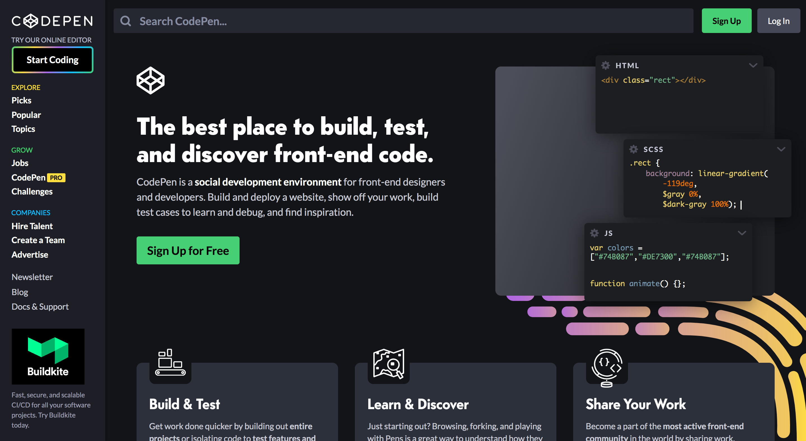

CodePenを使ってみよう
CodePenとは
CodePen: Build, Test, and Discover Front-end Code.

- Webページを構成するための3つの言語「HTML」「CSS」「JS」をブラウザの画面に入力するとリアルタイムに表示を確認でき、さらにその成果を保存・共有できるサービス。
- Webデザインの学習のほか、ブログに埋め込むことがでるため、プロフェショナルな人たちが技法の共有をする際にも活用されている。
- SNSのようにいいねやコメントを付けたり、他のSNSに共有することもできる。
CodePenに登録する 4:10
CodePenを利用するためには登録が必要です。以下の動画を参考に登録をしましょう。